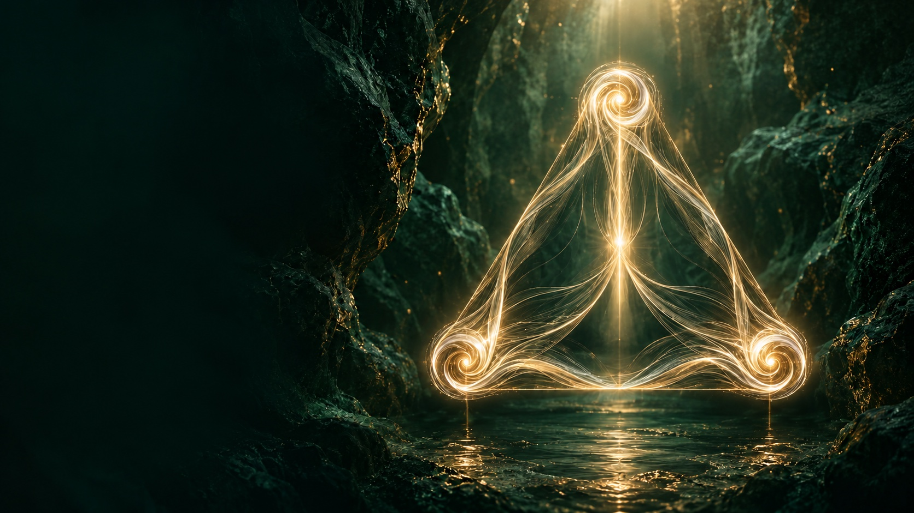
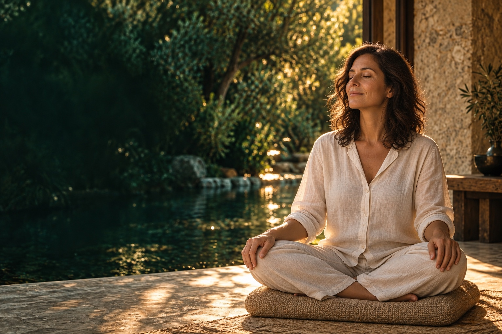

Presencia
Detenerte y reconocer cómo estás hoy. Escuchar el cuerpo y hacer espacio para lo que sientes.
Qué necesito escuchar en mí?

UnidadPresenciaCoherenciaRETIRO · 14 AL 24 DE NOVIEMBRE
Once días para recorrer tus diez cuerpos y el once que los une, hasta llegar al uno: tu alma. Sin irte de tu vida.
Aprende · Experimenta · Integra
14–24 NOVIEMBRE 2026 · ONLINE CON SATYA
Quiero participar Ya eres Premium o VIP? Está incluido.LO QUE VIENE DESPUÉS DEL CAMINO
Tu cansancio no se arregla descansando. No te falta tiempo: te falta estar en un solo lugar. Una práctica de quince minutos te devuelve un rato. Para que lo que encuentras se quede, hace falta un recorrido completo, con mapa y en compañía.
Del 11 al Uno es ese recorrido, y continúa el camino gratuito Vuelve a ti. Once días, un cuerpo por día, del once al uno. No es más tiempo: es el mismo tiempo, con un mapa. Cada día, una enseñanza breve, una práctica y una pregunta para llevar a tu vida.
Sin irte de tu vida.
Y terminando el día en que nació Guru Nanak, el maestro que enseñó que todo es Uno.

APRENDER. SENTIR. LLEVARLO A TU VIDA.
En una conversación.
Al poner un límite.
En la forma de escuchar.
En cómo vuelves a empezar.
TRES HILOS. UN MISMO VIAJE.
Detenerte y reconocer cómo estás hoy. Escuchar el cuerpo y hacer espacio para lo que sientes.
Qué necesito escuchar en mí?
Observar la relación entre lo que sientes, lo que dices y lo que haces. Llevar la práctica a una elección cotidiana.
Cómo quiero responder hoy?
Reunir cuerpo, mente y alma en la práctica. Explorar esa experiencia en tu forma de vivir y relacionarte.
Cómo se siente estar aquí, entero?
UNA BASE QUE TE SOSTIENE
Una secuencia guiada de respiración, once minutos de mantra y silencio. La intención, la enseñanza y la reflexión cambian cada día.
Una cápsula breve abre la enseñanza y la conecta con algo que puedas observar en tu vida.
Aprenderás una práctica común paso a paso. El canto de mantra dura 11 minutos; la preparación, la respiración y el silencio forman parte de la jornada completa.
Una pregunta de autoobservación y una invitación concreta para llevar la cualidad del día a tus decisiones y relaciones.
Si un día no participas, puedes volver al siguiente. No necesitas acumular sesiones pendientes para retomar el camino.
EL VIAJE DEL 11 AL UNO
El Kundalini Yoga no es relajación: es una tecnología precisa, de respiración, postura, sonido y tiempo exacto. Y trae un mapa que casi nadie usa: no eres solo cuerpo y mente. Cada día despierta uno de tus cuerpos y una cualidad para tu vida: el coraje, la sutileza, el servicio, la humildad…
Nos inspira el mapa de los diez cuerpos del Kundalini Yoga y su integración en el once, con las correspondencias de los diez gurús sijs y el Siri Guru Granth Sahib.
Del conjunto hacia el origen: llegamos al cuerpo del alma, asociado a Guru Nanak, y a la contemplación de Ek, el Uno. Este año el calendario acompaña: el 11 de noviembre se celebra el día en que la palabra se volvió maestro, y el 24, el día del cierre, el nacimiento de Guru Nanak.
EXPLORA UNA CUALIDAD DEL RECORRIDO
Siri Guru Granth Sahib · la enseñanza que reúne
Empezamos contemplando el conjunto: cuerpo, mente y alma participando de una misma experiencia.
Qué partes de mi vida necesitan volver a encontrarse?
Cada estación une una enseñanza, la práctica y una pregunta para tu vida. Este recorrido contemplativo es una propuesta de Portal Origen inspirada en ese mapa.
EL COMIENZO
Un encuentro en vivo para entrar en el contexto, aprender la práctica y hacer preguntas.
En vivo · Encuentro extendidoEL CAMINO
Intención diaria, grabaciones y un encuentro intermedio para escucharnos y acompañar el proceso.
Grabaciones + encuentro en vivoLA INTEGRACIÓN
Los Satsangs abiertos de los lunes acompañan el recorrido. El 24 de noviembre cerraremos juntos en un encuentro en vivo.
Satsangs abiertos + cierre en vivoLas inscripciones abren el 26 de octubre, después del capítulo 3 del camino gratuito. Antes de esa fecha confirmaremos los horarios, los guías y la duración completa de cada jornada. Las grabaciones te permitirán practicar en otro momento.
CON SATYA · EN PORTAL ORIGEN
Satya fue ejecutivo once años, hasta director comercial. Lo dejó y pasó los doce años siguientes aprendiendo en India, Nepal y otros países. Hoy enseña Kundalini Yoga y forma profesores: más de 5.000 personas han pasado por la escuela, con alumnos de 18 países.
Te guiará en la práctica y en los encuentros del recorrido. Entre un encuentro y otro tendrás las grabaciones, la intención del día y un lugar al que volver dentro de Portal Origen.
El viaje convive con el ritmo de la comunidad: los Satsangs de los lunes son abiertos. Las clases habituales de Kundalini Yoga de los viernes y las reuniones privadas de los miércoles pertenecen a Premium y VIP.
personas forman parte de Portal Origen
Un lugar compartido para aprender, practicar y volver.EL PROGRAMA COMPLETO, EN AMBAS OPCIONES
El pase y Premium incluyen todo el retiro Del 11 al Uno: once jornadas, enseñanzas, práctica guiada, encuentros del recorrido y grabaciones. Cambian la continuidad y el tiempo de acceso.
PROGRAMA COMPLETO + MEMBRESÍA
Todo Del 11 al Uno está incluido.
Y, además, tu práctica continúa aquí.
US$37/mes con renovación mensual en Skool. El cobro empieza al entrar; puede haber renovaciones antes del inicio del programa. No es un pago único de US$37 por todo el periodo.
PARA VIVIR SOLO ESTE RECORRIDO
El programa completo, con un final de acceso definido y sin suscripción.
Los beneficios adicionales de Premium que ves al lado no forman parte del pase.
Pago único en Hotmart. Contenido en Portal Origen, dentro de Skool. No se convierte automáticamente en membresía.
YA ESTÁS EN PORTAL ORIGEN?
Premium o VIP activo: tu participación está incluida. No necesitas comprar otro pase.
Estándar de pago: tienes un pase especial de US$37, pago único. Tu membresía se conserva al terminar el pase.
TE ACOMPAÑAMOS PARA LLEGAR
Pase con pago único en Hotmart o membresía mensual en Skool. Siempre verás qué estás contratando.
Recibirás las instrucciones para crear o usar tu perfil y llegar al programa dentro de Portal Origen.
Te acompañaremos con la inscripción, el acceso y los avisos de las once jornadas. Después de confirmar tu pago o membresía, podrás unirte al grupo de WhatsApp que corresponda.
ANTES DE ELEGIR
Premium incluye todo el programa, igual que el pase en cuanto a enseñanzas, prácticas y encuentros. Además, tienes bibliotecas de meditación y Kundalini Yoga, cursos y desafíos, pases de clases grabadas en streaming y encuentros de comunidad según el calendario vigente. El programa y esos beneficios están disponibles mientras tu membresía esté activa. Es una suscripción de US$37 al mes; el pase de US$47 es un pago único con acceso hasta el 13 de diciembre.
El lunes 26 de octubre, después del capítulo 3 de Vuelve a ti, primero para el círculo. El retiro es opcional: puedes seguir disfrutando del camino gratuito.
El pase cuenta con 7 días de devolución. Si necesitas ayuda con la solicitud, escríbenos a School of Love.
La práctica se enseñará desde el inicio, con instrucciones para seguirla. Podrás volver a la grabación de orientación cuando lo necesites.
No. Tendrás una práctica grabada y podrás hacerla en el horario que te resulte posible. Los encuentros en vivo tendrán su propio horario, que estará confirmado antes de abrir inscripciones, y contarás con sus grabaciones.
Los 11 minutos de mantra son una parte de la jornada. También habrá enseñanza, preparación, respiración y silencio. Publicaremos la duración total después de medir una sesión completa. Los encuentros en vivo tendrán su duración propia, visible antes de abrir las inscripciones.
El pase se paga en Hotmart. Las prácticas, los enlaces y las grabaciones estarán en Portal Origen, dentro de Skool. Si eliges Premium, contratas la membresía directamente en Skool. Te ayudaremos con los pasos de acceso.
Hasta el 13 de diciembre de 2026. Para un participante nuevo, en esa fecha termina tanto la estancia temporal en Portal Origen como el acceso al programa, salvo que contrate una membresía con derecho al programa. Si ya eras miembro Estándar, conservas tu membresía; lo que vence es el acceso de este pase. Premium y VIP acceden mientras su membresía esté activa.
Incluye Del 11 al Uno y la estancia temporal con acceso Estándar. Las clases habituales de Kundalini Yoga de los viernes y la reunión privada de comunidad de los miércoles están reservadas a Premium y VIP. Los Satsangs de los lunes son abiertos.
No. El grupo ayuda a recordar los encuentros y a encontrar los enlaces, pero el contenido estará en Portal Origen. Los miembros Premium y VIP usarán su canal de comunidad; los participantes del pase tendrán un grupo específico del recorrido.
No. Del 11 al Uno está incluido mientras tu membresía Premium o VIP esté activa. Si pagas Estándar, puedes elegir el pase especial de US$37 o valorar el cambio a Premium según las condiciones de Skool.
DEL 11 AL UNO · PORTAL ORIGEN
Tus diez cuerpos y el once que los une. Sin irte de tu vida.
14–24 de noviembre de 2026.